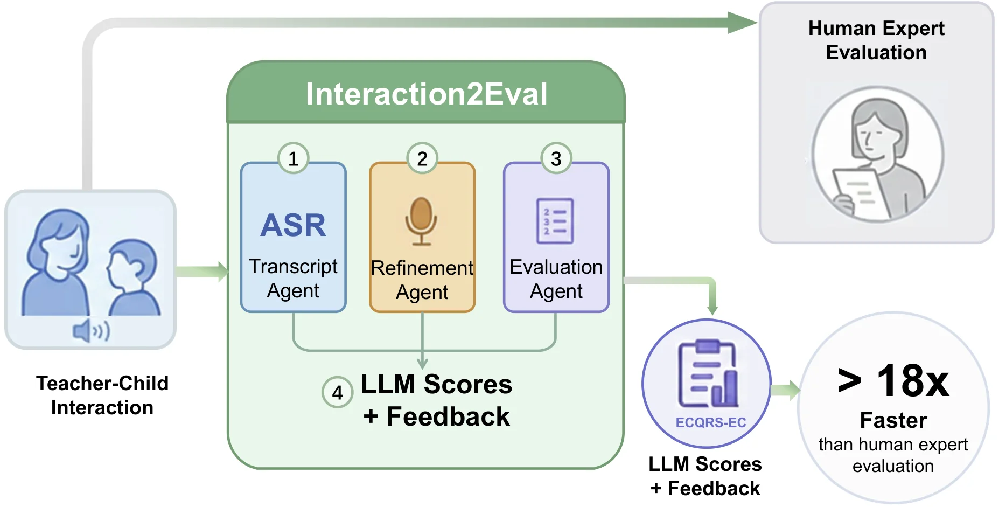

Authors
Research Team
A cross-institutional collaboration between NUDT, CUHK-Shenzhen, and the University of Oxford.
Full Paper · 16.7% acceptance rate from 1,241 submissions

Highlights
Dataset scale, annotation quality, and real-world deployment performance
Abstract
High-quality teacher-child interaction (TCI) is fundamental to early childhood development, yet traditional expert-based assessment faces a critical scalability challenge. In China's system serving 36 million children across 250,000+ kindergartens, the cost and time requirements of manual observation make continuous quality monitoring infeasible, relegating assessment to infrequent episodic audits that limit timely intervention and improvement tracking.
We investigate whether AI can serve as a scalable assessment teammate by extracting structured quality indicators and validating their alignment with human expert judgments. Our Interaction2Eval framework achieves up to 88% agreement with human experts, validated through pilot deployment across 43 classrooms with an 18× efficiency gain—enabling a paradigm shift from annual expert audits to monthly AI-assisted monitoring with targeted human oversight.
First large-scale dataset of naturalistic teacher-child interactions in Chinese preschools — 370 hours, 105 classrooms, standardized ECQRS-EC & SSTEW annotations.
Specialized LLM-based pipeline for educational speech: Mandarin homophone disambiguation, child speech recognition, rubric-based assessment with evidence-first reasoning.
18× efficiency gains validated across 43 real classrooms — shifting from annual episodic audits to monthly AI-assisted continuous monitoring.
Dataset
The first large-scale naturalistic teacher-child interaction corpus in Chinese preschools, with expert-quality standardized annotations.
Figure 1: TEPE-TCI dataset composition and statistics
Collected from 41 public preschools across three quality tiers in China (district, municipal, provincial level), covering 105 classrooms with 3–4 year-old children. iFLYTEK H1 Pro recorders captured 370+ hours of naturalistic audio across group activities, free play, outdoor activities, and daily routines.
Professional assessors (κ > 0.80 inter-rater reliability) applied ECQRS-EC (22 items, 4 domains: Literacy, Mathematics, Science, Diversity) and SSTEW (15 items) rubrics with indicator-level binary coding across 206 total indicators.
Method
A three-stage LLM-based pipeline that transforms raw classroom audio into expert-level quality assessments.
Processes raw classroom audio using FunASR Paraformer with speaker diarization and punctuation restoration, distinguishing teacher and student speech automatically.
Leverages Qwen3-Max with domain-aware prompting for context-sensitive error correction — targeting Mandarin homophones and preschool-specific educational vocabulary.
Applies rubric-based prompting (SSTEW & ECQRS-EC) with evidence-first reasoning: locate utterances → judge indicator presence → justify with transcript evidence → generate feedback.
Results
State-of-the-art LLMs evaluated against expert annotations across two standardized rubric scales.
Across Literacy, Mathematics, Science & Diversity domains
Trust & Self-regulation, Language, Critical Thinking, Planning
Evaluated on a 5-hour test set (16,168 reference characters from naturalistic preschool audio)
| ASR Model | Raw CER | After Refinement | Absolute Reduction | Relative Improvement |
|---|---|---|---|---|
| Whisper-large v3 | 35.1% | 23.2% | −11.9% | 33.4% |
| FunASR Paraformer ★ | 9.9% | 4.3% | −5.6% | 56.6% |
ASR systems struggle with education-specific vocabulary in preschool settings. The word cloud visualizes the most frequent ASR errors, with size proportional to error frequency.
Errors concentrate on Mandarin homophones — e.g., jìnqū (进区, enter learning centers) vs. jìnqù (进去, go inside) — validating the necessity of the domain-aware Refinement Agent.
Real-World Deployment
Validated across 43 classrooms in 3 public kindergartens over 4 weeks of preliminary deployment.
Figure 4: Pilot deployment overview — data collection, pipeline, and teacher feedback
"Same-day results — I could finally see what happened in my classroom that morning and adjust my afternoon accordingly." — Teacher, Shenzhen pilot deployment
"The exact quotes supporting each score made the evaluations understandable. It's like a data mirror for evidence-based reflection." — 22-year veteran teacher, Shenzhen pilot
Interaction2Eval reduces expert workload from 633 expert-hours to 35 expert-hours per 100 classrooms monthly — enabling a shift from annual episodic audits to continuous monthly AI-assisted monitoring with targeted human oversight.
Authors
A cross-institutional collaboration between NUDT, CUHK-Shenzhen, and the University of Oxford.
Citation
If you find TEPE-TCI or Interaction2Eval useful in your research, please cite our paper.
@inproceedings{li2026when, title = {When {AI} Meets Early Childhood Education: Large Language Models as Assessment Teammates in {Chinese} Preschools}, author = {Li, Xingming and Huang, Runke and Bao, Yanan and Jin, Yuye and Jiao, Yuru and Hu, Qingyong}, booktitle = {Proceedings of the 27th International Conference on Artificial Intelligence in Education ({AIED})}, year = {2026}, address = {Seoul, South Korea} }
Contact
For questions about the paper, dataset, or Interaction2Eval framework, please contact the corresponding author.

Runke Huang
Corresponding Author · The Chinese University of Hong Kong, Shenzhen
runkehuang@cuhk.edu.cnWe welcome questions about the TEPE-TCI-370h dataset, the Interaction2Eval framework, and potential collaboration opportunities in AI-assisted early childhood education assessment.
Visitors Around the World